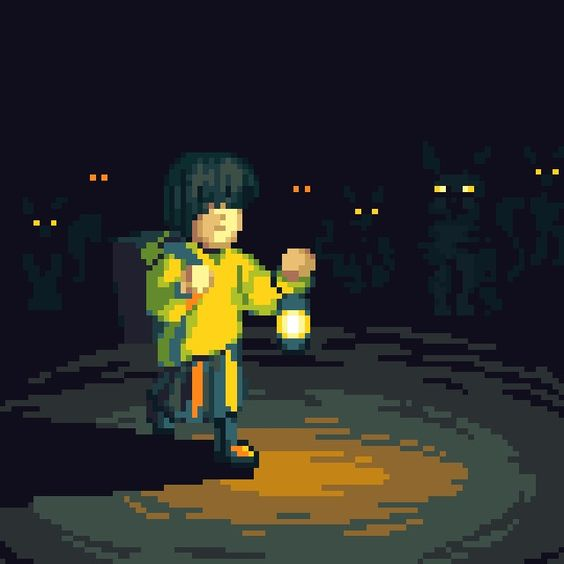

Mistérios da Mansão Esquecida

Você então volta lentamente pelo corredor escuro com cautela, mantendo seus sentidos aguçados para qualquer sinal de perigo. À medida que você avança, os sons ecoam ao seu redor, criando uma sensação de inquietação. De repente, você ouve um sussurro sibilante vindo de uma das portas laterais. Você hesita, mas decide investigar. Ao se aproximar da porta entreaberta, uma figura sombria se lança em sua direção, emitindo um grito agudo e angustiante. Você percebe tarde demais que caiu em uma armadilha mortal.